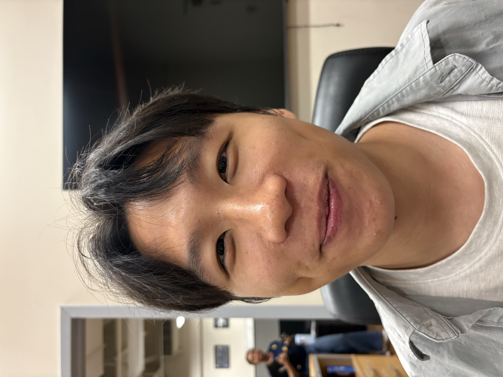
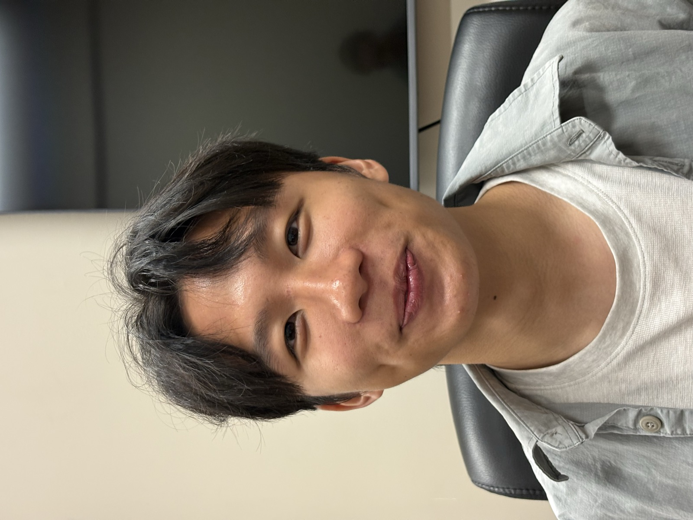
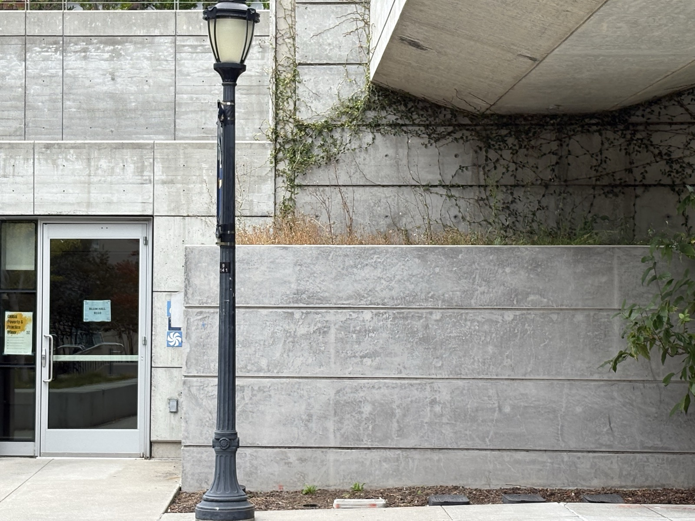
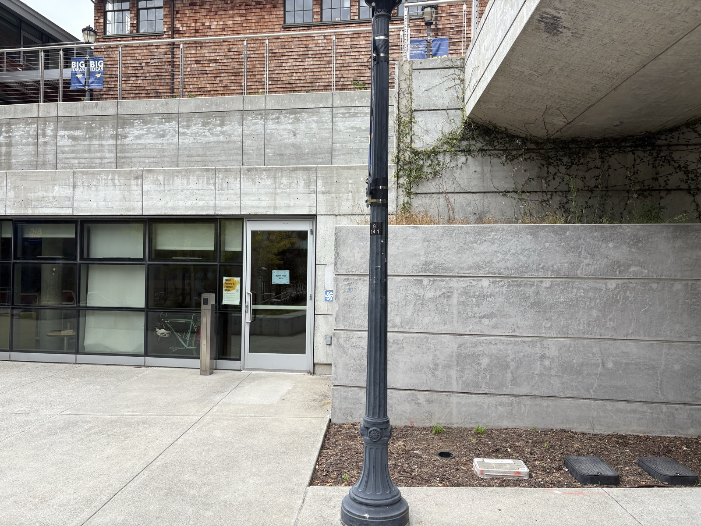
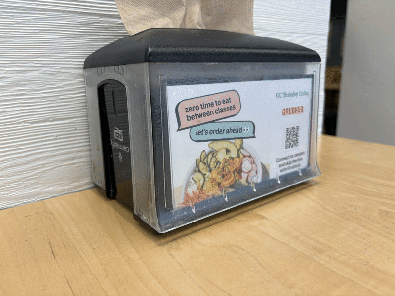
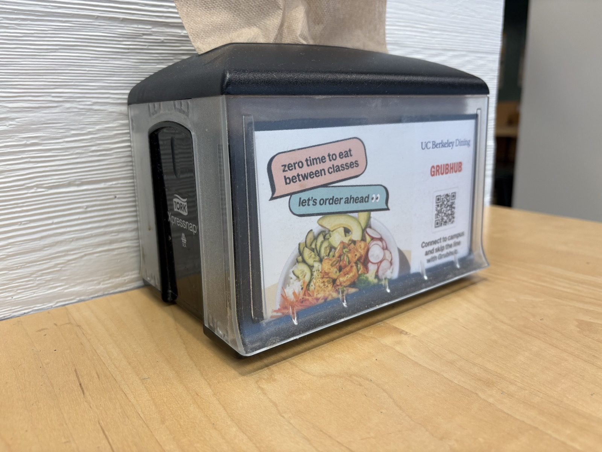
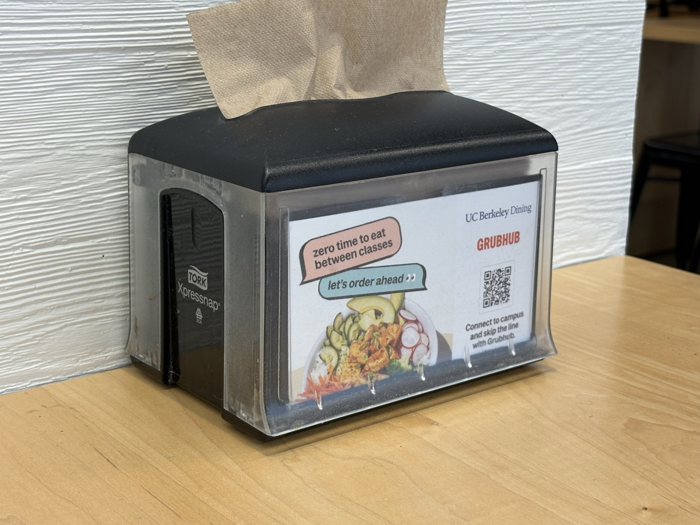
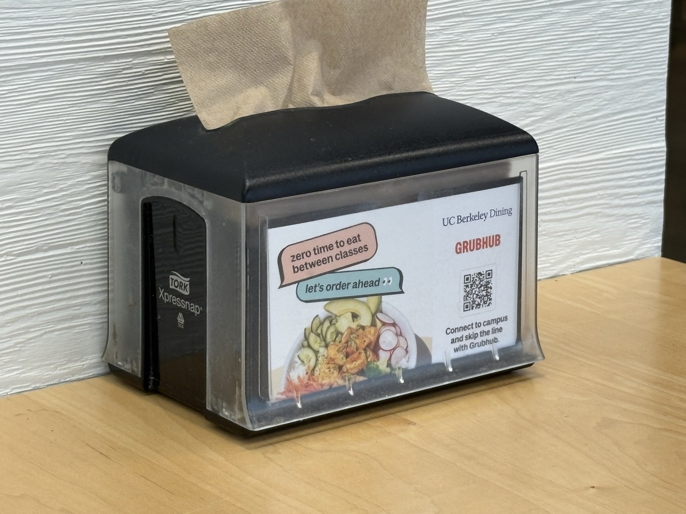
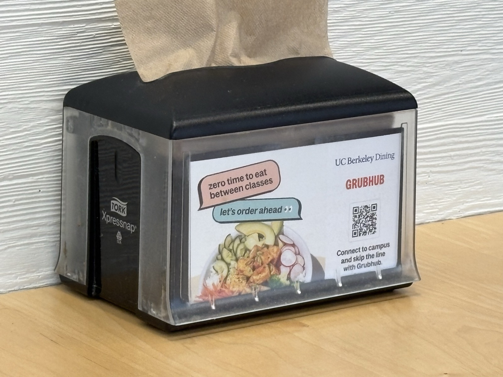

The Selfie Comparison
Two portraits of the same face, framed to the same size — one shot up close, the other from several feet back with the camera zoomed in to compensate.


Why the second one looks better
When the camera is only a few centimeters away, the tip of the nose is dramatically closer to the lens than the ears are. Because apparent size falls off with distance, that small difference gets exaggerated: the nose and forehead are magnified relative to the rest of the face, producing the classic "selfie bulge."
Stepping back to two meters makes the nose-to-lens and ears-to-lens distances nearly equal, so every feature is magnified by almost the same amount. Zooming in restores the face to the same size in frame, but the proportions are now true to life — which is exactly why portrait photographers shoot from a distance with a longer lens.
Architectural Perspective Compression
The same lamp post and concrete façade at Blum Hall, captured two ways: far away with heavy zoom, then up close with none. The building stays roughly the same size — but the sense of depth does not.


Why the first one looks compressed
Perspective — how quickly things shrink with distance — is set entirely by where the camera stands, not by the zoom. From far away, the front of the scene and the back of the scene are both a long way off, so the ratio of their distances is close to 1:1. Near and far objects shrink by almost the same amount, and depth collapses; zooming in just crops into that already-flattened view.
Standing close flips this. Now the foreground is only a fraction of the distance to the background, so near objects loom large and far objects fall away sharply. That strong distance ratio is what gives the second photo its palpable depth.
The Dolly Zoom
The cinematic "Vertigo" effect: walk the camera backward while zooming in, keeping the subject the same size. The subject holds still in the frame while the world behind it seems to swell and shift.

What's happening
Moving backward stretches out the perspective (the background falls away and shrinks); zooming in magnifies everything to hold the subject at a fixed size. The two effects cancel on the subject but not on the background.
The result is that eerie, physically impossible sense of the scene warping around a stationary object — the same trick Hitchcock used to make a stairwell yawn open in Vertigo.




The four source stills — camera stepping back and focal length increasing left to right.